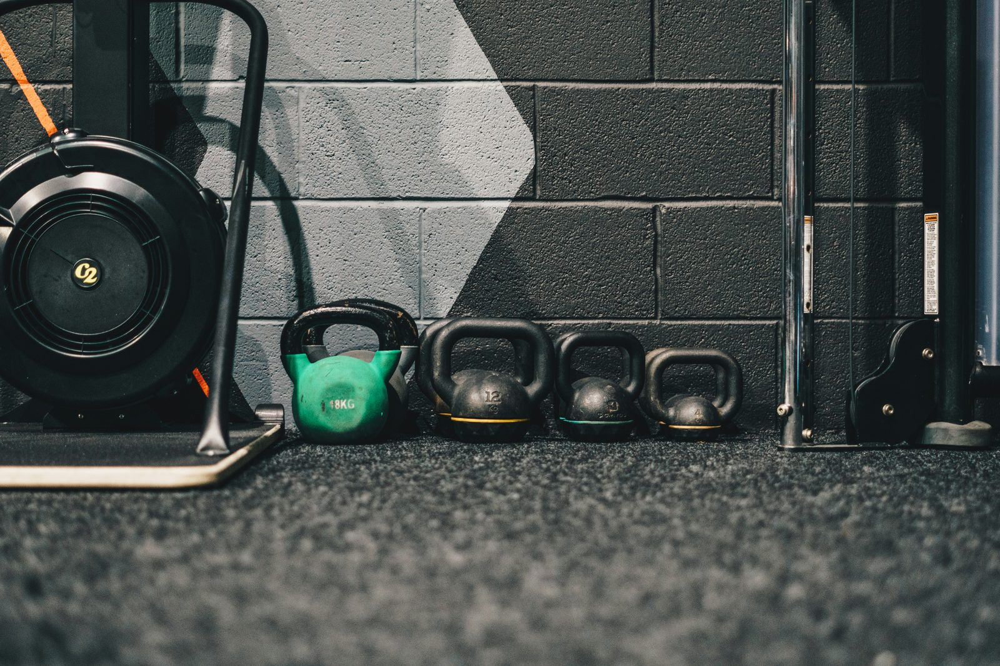

Walk into any gym and you'll find people firmly convinced that either the treadmill or the squat rack is the "real" way to lose fat. Both camps have a point, and both are missing something. The honest answer is that cardio and weight training do genuinely different jobs in a fat loss plan — and understanding what each one actually contributes changes how you'd combine them.
Calorie burn: cardio wins the single session
Minute for minute, cardio burns more calories during the activity itself. A 45-minute moderate-intensity run might burn 400–500 kcal, while a 45-minute weights session more typically burns 200–300 kcal in the same window, since lifting involves more rest between sets and less continuous movement. If your only lever were "calories burned per hour of exercise," cardio would be the clear winner.
But fat loss isn't just about the workout itself
This is where the comparison gets more interesting. Total daily energy expenditure is only partly driven by exercise — resting metabolic rate, the calories your body burns simply existing, typically accounts for 60–75% of daily energy use in a sedentary-to-moderately-active person. Muscle tissue is more metabolically active than fat tissue, meaning more muscle mass modestly raises your resting burn rate around the clock, not just during a workout.
Weight training's real fat-loss contribution isn't the calories burned during the session — it's the muscle it helps you build or preserve, which raises your baseline burn rate over months and years, not just for the hour you're in the gym.
The afterburn effect (EPOC)
Both cardio and weights produce excess post-exercise oxygen consumption (EPOC) — extra calories burned in the hours after a workout while your body restores itself to baseline. Resistance training, especially at higher intensity, tends to produce a somewhat larger and longer EPOC effect than steady-state cardio, though the total additional calories from this effect are more modest than fitness marketing often implies — typically an extra 6–15% on top of the workout's direct calorie burn, not a dramatic multiplier.
Muscle preservation during a deficit
This is the single biggest practical difference between the two for someone actively losing weight. A calorie deficit signals your body to shed tissue, and without a strong enough stimulus to keep it, some of that lost weight will come from muscle rather than fat. Resistance training gives your body a clear reason to hold onto muscle even while calories are restricted — cardio alone provides very little of this protective signal.
Losing weight without any resistance training often means a meaningful share of the total weight lost is muscle, not fat — meaning the number on the scale drops, but body composition (the ratio of fat to muscle) doesn't improve as much as it could, and metabolism tends to slow more than necessary.
Cardiovascular and health benefits beyond the scale
None of this is an argument against cardio — it carries its own independent benefits unrelated to fat loss specifically, including improved cardiovascular fitness, better insulin sensitivity, and documented reductions in all-cause mortality risk at even moderate weekly volumes. These benefits don't show up on a bathroom scale but matter for long-term health regardless of your physique goals.
What the research suggests about combining both
Studies directly comparing cardio-only, weights-only, and combined training for fat loss generally find that combined programs produce the best body composition outcomes — meaningful fat loss while better preserving or even building muscle, compared to either method alone at a matched calorie deficit. Neither modality alone is complete: cardio without resistance training risks losing muscle along with fat, while resistance training without any cardio misses out on cardiovascular conditioning and, for many people, a meaningful chunk of weekly calorie burn.
A practical starting split
For most people prioritising fat loss while preserving muscle, a reasonable starting point is 2–4 resistance training sessions per week covering all major muscle groups, plus 2–3 cardio sessions (a mix of moderate steady-state and, if tolerated, some higher-intensity intervals) totalling 90–150 minutes weekly. This isn't a rigid prescription — the right balance depends on your starting fitness, available time, and how well you recover — but it reflects the general principle that both modalities contribute something the other doesn't.
The bottom line
Cardio burns more calories in the moment; weight training protects and builds the muscle that keeps your metabolism working in your favour long-term. Neither replaces the other for fat loss specifically — they solve different parts of the same problem, and combining them consistently outperforms leaning entirely on just one.
Frequently asked questions
Which burns more calories in a single session, cardio or weights?
Cardio typically burns more calories during the session itself. A 45-minute run might burn 400-500 kcal versus 200-300 for a weights session of the same length, since lifting involves more rest between sets.
Does lifting weights really keep burning calories after the workout?
Yes, to a modest degree. Resistance training produces a somewhat larger and longer afterburn effect (EPOC) than steady-state cardio, though the total extra calories from this effect are usually smaller than fitness marketing implies — often 6-15% on top of the workout itself.
Will lifting weights make me lose muscle while in a calorie deficit?
The opposite — resistance training during a deficit is one of the most effective ways to preserve muscle mass. Cardio alone in a deficit does comparatively little to protect muscle tissue.
Do I have to choose one or can I do both?
Combining both is generally the most effective approach for fat loss — weights to preserve muscle and support long-term metabolism, cardio to add extra calorie burn and cardiovascular benefits that resistance training alone doesn't provide.